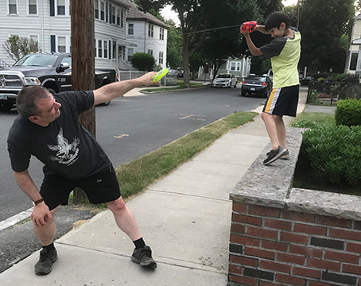

Oorlog en technologie
In deze les, ga je de implicaties van technologie op oorlogsvoering overwegen.
Op deze pagina, ga je het belang van pre-computertechnologieën in de oorlogsvoering bekijken.
| Vroeger zagen waterpistolen er zo uit: | 
|
| Flickr: Dean Hochman, CC-BY-2.0 |
|  | Omdat alle waterdruk direct van je vinger kwam, moest je praktisch boven op de andere persoon zitten om ze te raken. |
| S.Tezel, CC-BY-NC-ND-4.0 |
| Maar in 1982 werd de Super Soaker uitgevonden. Dit waterpistool heeft een pomp die met herhaalde heen-en-weerbewegingen de waterdruk verhoogt en zo veel harder en dus verder kan schieten. | 
|
| The Strong, CC-BY-NC-ND-4.0 |

|
Deze uitvinding heeft watergevechten totaal veranderd. Nu kan je je terwijl je je vijand beschiet verstoppen achter obstakels in de tuin en raakt iedereen volledig doorweekt. |
| Flickr: John Shedrick, CC-BY-2.0 |

Super Soaker-uitvinder Lonnie Johnson is een ingenieur wiens professionele activiteiten voornamelijk in energieproductie lagen, met name de productie van vastestofbatterijen en zonnepanelen. Zijn eerste professionele werk was bij de Amerikaanse luchtmacht en daarna in het Jet Propulsion Laboratory voor de Galileo-missie naar Jupiter.
(U.S. Government-foto in het publieke domein, gedownload van Wikimedia.)
Technologie heeft ook invloed op echte oorlogen. De uitkomst van individuele gevechten kan worden bepaald door het aantal soldaten, de strategieën van generaals en andere menselijke factoren. Maar, op zeldzame uitzonderingen na, als één partij betere technologie heeft, wint die partij op de lange termijn. In de Zevende Eeuw bijvoorbeeld was het Oost-Romeinse (Byzantijnse) Rijk militair zwak tot de uitvinding van het "Griekse vuur", een brandbare chemische stof die met buizen of in projectielen werd afgevuurd, met de speciale eigenschap dat het in water zou blijven branden, daarmee was het waardevol in zeeslagen. Dit wapen was zeer belangrijk voor het voortbestaan van het Byzantijnse rijk, dat bleef bestaan tot in de 15e eeuw.
- Wat gebeurt er als je de nieuwste Super Soaker hebt en je vriend zich alleen een ouderwets spuitpistool kan veroorloven?
- Kijk hoeveel belangrijke militaire technologieën je in twee minuten kunt opsommen. (Vergeet niet defensieve technologieën, zoals dikke kasteelmuren.)
- Kies samen met een partner een van deze voorbeelden om online te onderzoeken en deel je resultaten
met de klas.
- Waarom waren met metaal beklede schepen belangrijk in de Amerikaanse burgeroorlog?
- Waarom hadden legers in het algemeen felgekleurde uniformen in de 19e eeuw, maar in de eeuwen daarna veel minder?
- Hoe hebben vliegtuigen het oorlogsrecht met betrekking tot burgers veranderd?